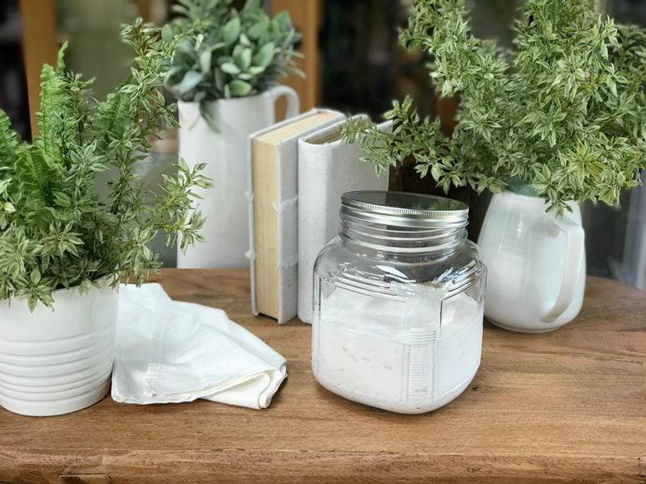
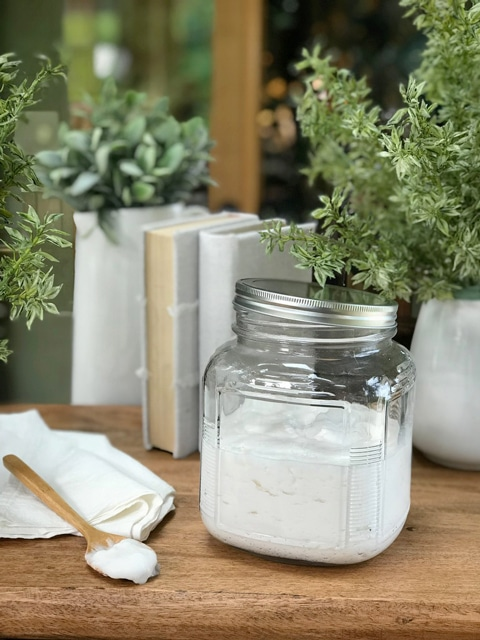

Cultured Young Thai Coconut Yogurt | Using Probiotics
Cultured Young Thai Coconut Yogurt – with probiotics –
Do you eat a dairy-free diet? Do you miss the creamy mouthfeel of yogurt? Do you enjoy coconut? If you answered yes to any of these questions, you will love this raw, nut-free, dairy-free, yogurt that has just a hint of coconut. There are so many wonderful ways to enjoy yogurt…as-is, or topped with granola, but it can also be used in cheesecakes, frostings, or even frozen creamy popsicles.

I have made a lot of raw yogurt over the years but never did a recipe post. Why? Because I always ate the end result before I could get a photo, and I just don’t believe in posting a recipe without a photo! That is one of my pet peeves with recipe sites and recipe books… I want a picture or two or five of each and every recipe! Food photos fire up our digestive juices and get our creative juices flowing. I need to know what the end result should look like. I want to know what flavors and smells I should expect.
If you are new to young Thai coconuts, I would really love for you to give them a try. There is nothing quite like them. Caution… young Thai coconuts taste like coconut. So, if you don’t like the flavor of coconut, this recipe is not for you.
 When making this recipe, you will want to use the best-quality probiotics. They are responsible for the fermentation, which will give that “tangy-yogurt” taste. The longer it sits during the fermentation process the stronger the tang.
When making this recipe, you will want to use the best-quality probiotics. They are responsible for the fermentation, which will give that “tangy-yogurt” taste. The longer it sits during the fermentation process the stronger the tang.
Once it reaches the level of fermentation that you like, you will put it in the fridge, which will then slow that fermentation to a crawl.
There are tons of different probiotics on the market, so please don’t get overwhelmed or stressed about it. That is counterproductive when we are trying to feed our bodies and keep ourselves healthy. Probiotics come in a wide range of prices, and you may find many of them to be expensive, but it is a small price to pay when we are trying to stay healthy.
The preparation is just as important as the ingredients. Make sure all of your equipment is clean and dry before starting. Some people go as far as boiling all of the utensils. Don’t use wooden spoons or bowls; bacteria can be hidden in them. You also want to store your yogurt in glass containers.
The blending process, to me, will make or break the final outcome, but then I am all about texture. I was one of those little girls who LOVED to play in the mud, but not just ANY mud. My great-grandmother sectioned off a part of her garden for me that consisted of pure, wonderful black soil, and when I made mud pies, I borrowed her flour sifter (shhh, don’t tell her that) just so I could make creamy mud pies. So when blending, make sure you do it long enough to get a creamy texture because it won’t get any smoother as it sits.
This yogurt is nothing short of amazing. It is silky and thick, which you can see in the photos that I took. The taste is also a bit tangy and sour, with a hint of coconut in the background. As I mentioned above, enjoy it plain, top it with fresh or dried fruit, drizzle honey on it (Bob’s favorite way), use it as a base in a creamy sauce, or sprinkle it with granola! Today, I served this yogurt with my Raw Nut House Granola.

Ingredients:
Yields 2 cups
Preparation:
- First and foremost, make sure all of the utensils and pieces of equipment you use for culturing are sterilized to avoid growing bad bacteria.
- If at any time mold forms–fuzzy, black, or pink–it will need to be tossed.
- Place the coconut meat, water, probiotic powder, and stevia in the blender and blend until smooth.
- Ferment in a glass container with a loose lid, or rubber band a paper towel over the top, for 24-48 hours.
- Keep in a dark, dry, cool place for 24 hours. I put mine in the kitchen cupboard.
- Make sure that all your utensils, and the bowl you ferment in, are extremely clean.
- Taste test as it ferments. You might like it strong tasting, or not.
- The fermenting process speeds up in warmer temps.
- Store your yogurt in the fridge with a tight lid. It should last for 5 days.
© AmieSue.com